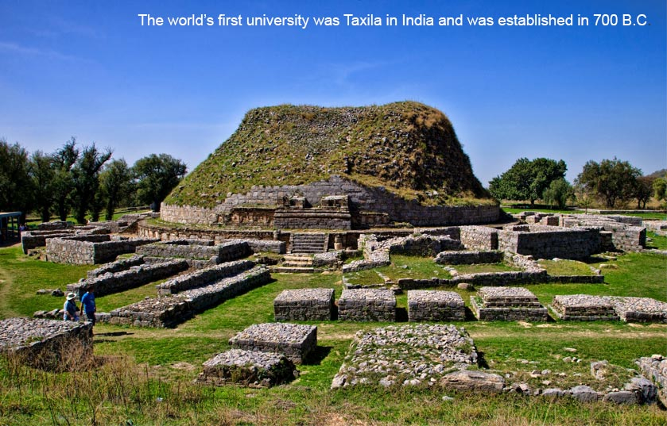

Global Connections Seminar XVII
Peace Education within Faith Diversity
DALY COLLEGE, India | January 12-19, 2016

June 2015.
Dear GC Colleagues,
At last we shall make it to India for a Global Connections Seminar. What a pleasure, and an education, this will be. Our hosts will be Sumer Singh, Principal of The Daly College in Indore, and Indu Kapoor, the Dean of the Pre-Primary Division of Daly. Daly is a marvelous school, with an engrossing history. We shall enjoy our slice of India all the more as we view it through the lens provided by Daly College.
Sumer and Indu have put together an inspiring program for GCXVII. Take a look at it, along with the additional information that they have provided for this website posting. Our dates are from Tuesday, January 12 to Tuesday, January 19. We start in Mumbai and end in Indore. The non-refundable seminar fee is US Dollars 2,500. Of this total, 2,000 (two thousand) should be paid to Daly College and 500 (five hundred) to Keystone Academy.
Arising from our two most recent seminars, in Columbia in 2013 and then Macedonia in 2014, the theme of Peace Education has gripped us, quite appropriately. In India, this will take on the dimensions of "Peace Education within Faith Diversity".
All participants from recent seminars who are on our database were advised of this seminar in late January. So far, over 40 have already signed up. We are nearing our capacity, so please move fast if you are interested. You should contact Indu Kapoor, directly.
We chose January dates owing to the Indian climate. It is likely that we shall move back to our July cycle for Seminar XVIII, to be held in 2017, principally in Beijing and hosted by Keystone Academy. But this decision can wait until we all meet up again in India.
With warm regards.
Malcolm McKenzie
Global Connections President
Head of School
Keystone Academy
Beijing
Check out more information about this seminar here and the draft program here.
Download the Registration Form and the Flight Details Form.
Download the Invitation Letter from Daly College.
Find out more about India, the host country of this seminar here.